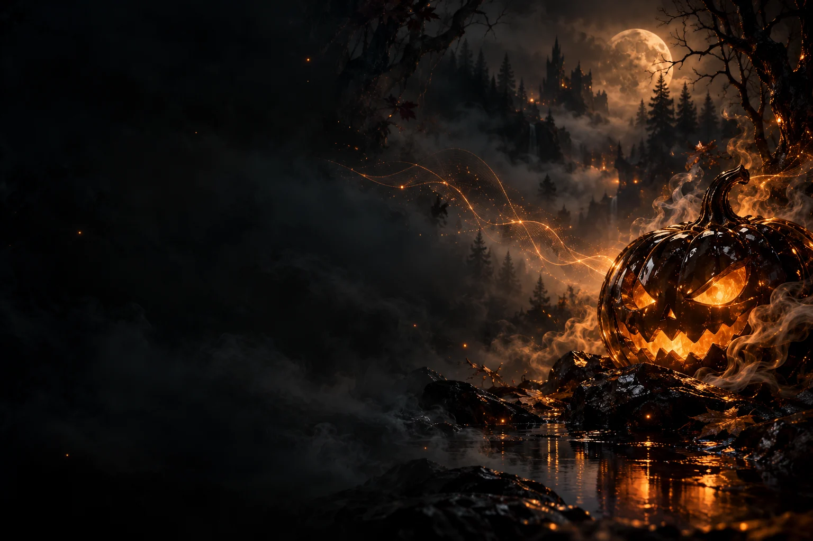

VEYRA / THEME STUDIO / 01
Halloween Nocturne
Smoked glass. Pumpkin amber. A different kind of night.
Native component studies for preview 0.1.7-beta1. These images illustrate implemented components; they are not full-device screenshots.

The same music. A new atmosphere.
Apply from Settings → Appearance → Theme studio in Veyra 0.1.7-beta1. The interface asks before refreshing; music keeps playing. Original appearance is always available offline. Theme ZIPs are not APKs.